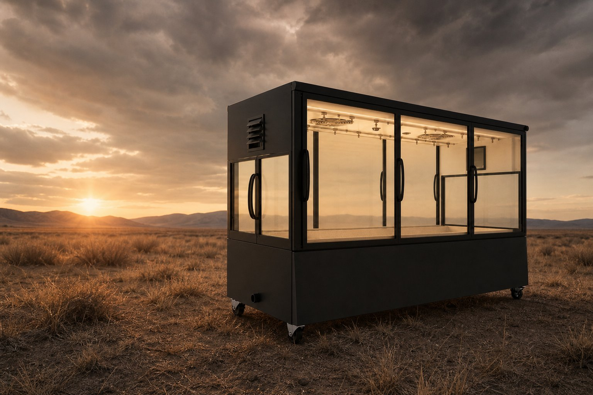
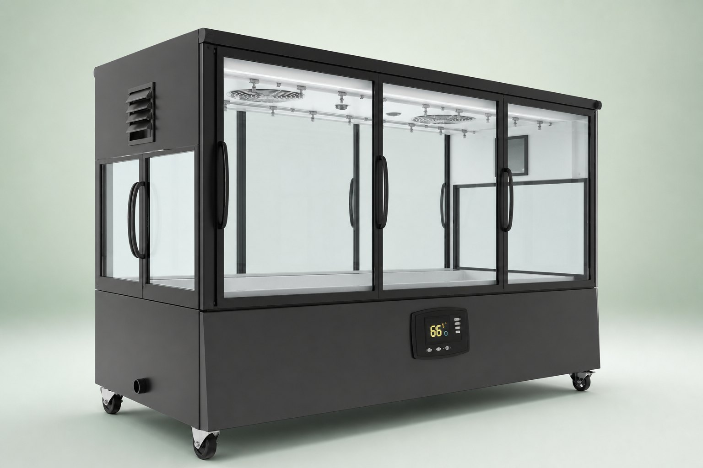
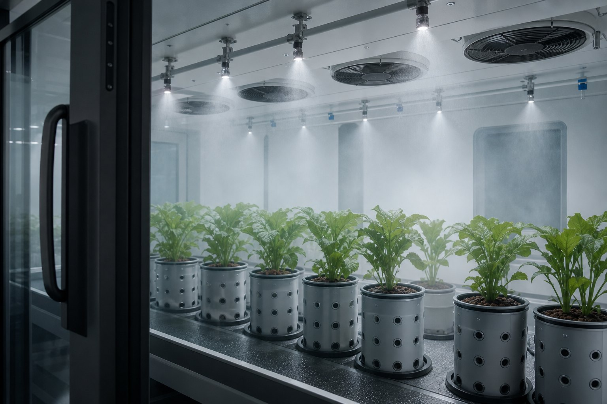
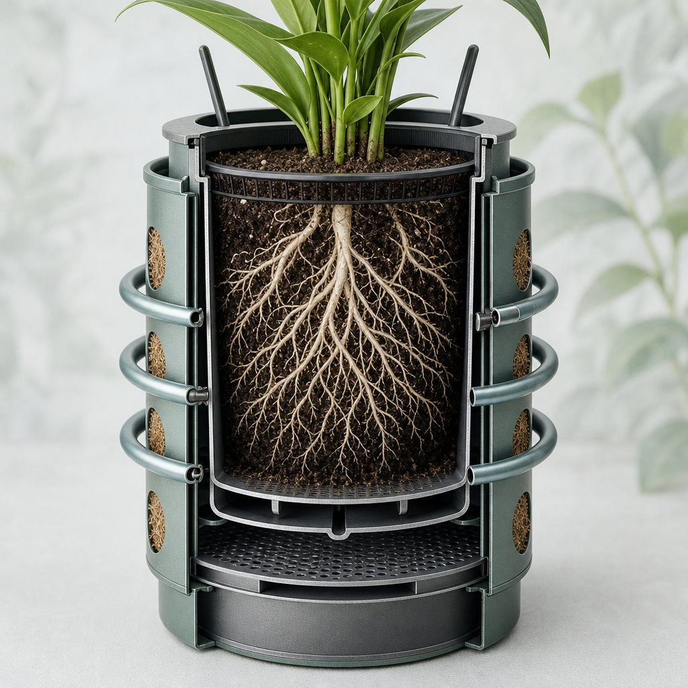
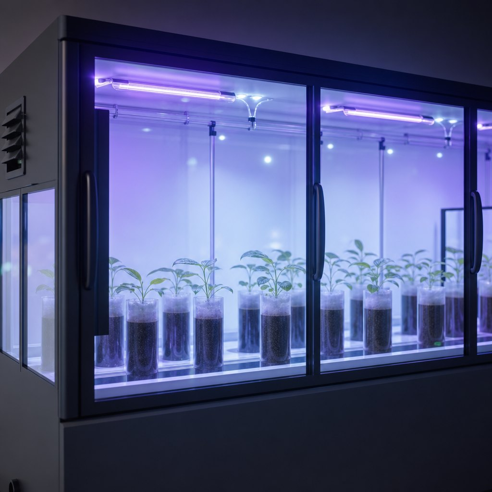
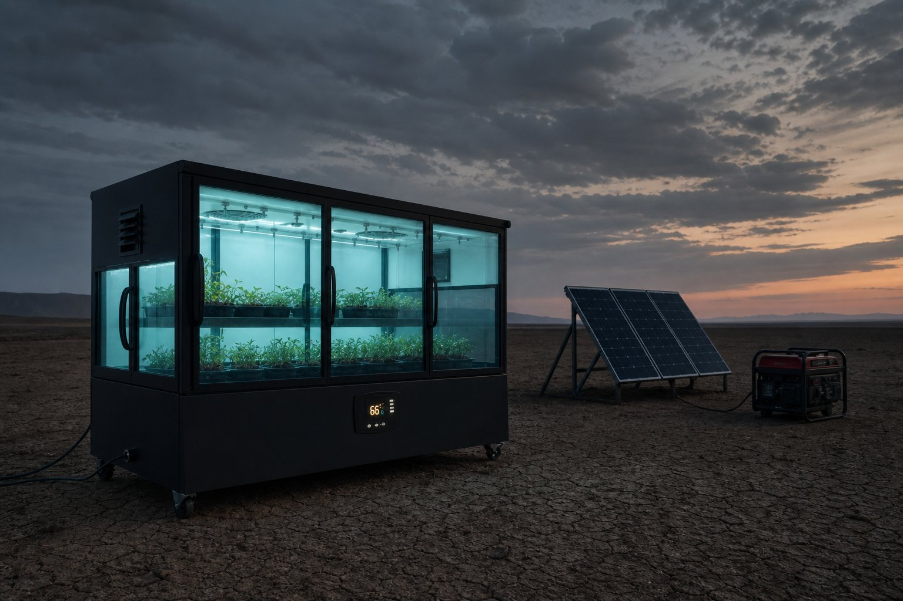
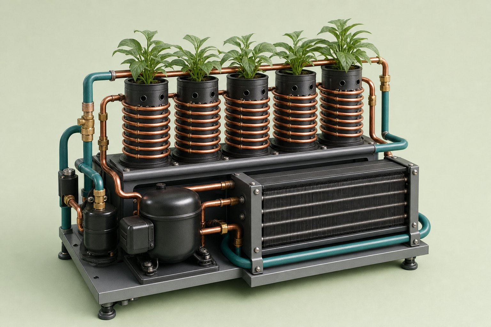
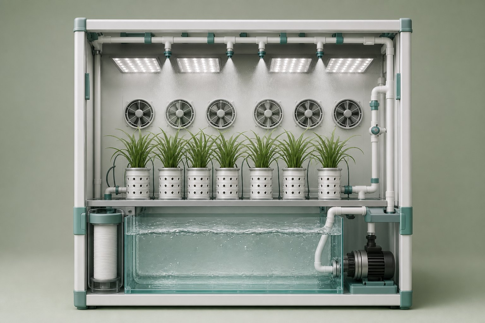

The sealed chamber
Circulation fans and overhead mist keep the grow space uniform—without opening the crop to shared greenhouse air.

AG
Self-contained micro-climate cabinet for high-value crops. Direct-to-root thermal control, closed-loop water, built-in biosecurity.
The unit
Glass-front mobility. Root-cooled containers. A sealed chamber that carries its own climate.






Power
Built for the edge of the map—three redundant inputs keep the climate alive when the grid can't reach.
Resilience
A remote field. A research outpost. A rooftop miles from anywhere. AG carries its own power, water, and climate—so the crop never notices the world outside.

System
Why AG
Audio
A walkthrough of root autonomy, biosecurity, and mobility—how the system fits together.

Go-to-market
Protect Arabica through early growth as regional climates warm.
Modular units that isolate variables—without multi-million climate rooms.
Warehouse and retail deployments with a compact, mobile footprint.
Sterile, pesticide-free pharma and cosmetic raw materials.
IP
Gaylon Taylor